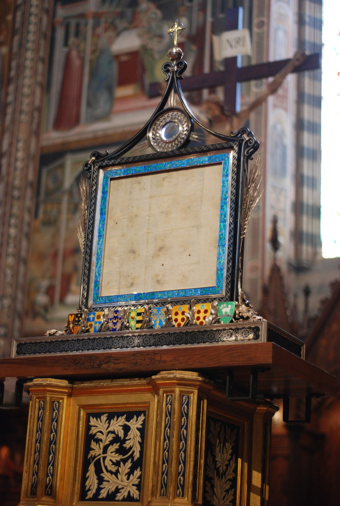

RoyFokker · Wikimedia Commons · Public domainO Milagre de Bolsena e o Corporal de Orvieto
Reconhecido pela Santa Igreja CatólicaO RELATO
O FATO
Em 1263, um sacerdote chamado Pedro, que a tradição diz vindo de Praga, parou em Bolsena a caminho de Roma. Levava uma dúvida sobre a presença real de Cristo na Eucaristia. Celebrou a missa sobre o túmulo da mártir Santa Cristina.
Segundo o relato guardado pela basílica, no momento da elevação a hóstia verteu sangue sobre o corporal. Algumas gotas caíram no mármore do piso e nos degraus do altar. O dia exato do fato não é conhecido.
A INVESTIGAÇÃO
O papa Urbano IV residia então em Orvieto, a poucos quilômetros dali. O sacerdote confessou-lhe a dúvida e o fato. O papa enviou a Bolsena o bispo de Orvieto, Giacomo Maltraga, para verificar o ocorrido e trazer o corporal e a hóstia.
Urbano IV saiu da cidade ao encontro da procissão, recebeu as relíquias de joelhos e as depositou na catedral de Santa Maria. O registro escrito mais antigo é uma crônica orvietana do início do século XIV, que chama o fato de Milagre do Corpus Christi.
AS RELÍQUIAS HOJE
O corporal fica na Capela do Corporal, erguida entre 1350 e 1356 no transepto da catedral de Orvieto, dentro do tabernáculo de mármore feito entre 1358 e 1363. Os afrescos da capela, concluídos em 1364, narram o fato.
O relicário de prata dourada e esmaltes, encomendado em 1338 ao ourives sienês Ugolino di Vieri, tem trinta e dois painéis com a história do corporal. Em Bolsena, as pedras manchadas são veneradas na basílica de Santa Cristina.
O QUE A SANTA IGREJA CATÓLICA DECIDIU
Em Orvieto, em 11 de agosto de 1264, Urbano IV instituiu a festa de Corpus Christi para toda a Santa Igreja Católica, pela bula Transiturus de hoc mundo. A bula não cita Bolsena. Em 11 de agosto de 1964, no sétimo centenário, Paulo VI celebrou missa em Orvieto diante do corporal. Em 1976, ao elevar Santa Cristina a basílica, o mesmo papa recordou em decreto o célebre Milagre Eucarístico ocorrido naquela igreja em 1263.
FOTOS

Imagens do Wikimedia Commons, em domínio público ou Creative Commons, com crédito ao autor.
VÍDEOS
 ▶Il Miracolo Eucaristico di BolsenaTv2000it · YouTube
▶Il Miracolo Eucaristico di BolsenaTv2000it · YouTube ▶Eucharistic Miracle: Chapel of the Miracle, Orvieto, Italy in 4KCrux Stationalis: Jacob Stein · YouTube
▶Eucharistic Miracle: Chapel of the Miracle, Orvieto, Italy in 4KCrux Stationalis: Jacob Stein · YouTubeVídeos públicos do YouTube, de canais de terceiros. Abrem no YouTube.
COMO VISITAR
Basílica de Santa Cristina, em Bolsena · Capela do Corporal, na Catedral de Orvieto
Bolsena e Orvieto, Itália
FONTES
- Basílica de Santa Cristina, Bolsena — O Milagre Eucarístico (basilicasantacristina.it)
- Vatican.va — Discurso de Paulo VI em Orvieto, 11 ago 1964 (VII centenário da Transiturus)
- Urbano IV — bula Transiturus de hoc mundo, Orvieto, 11 ago 1264
- Key to Umbria — Il Sacro Corporale e la Cappella del Corporale, Duomo di Orvieto
VER O POST NO INSTAGRAMTODOS OS MILAGRES NO MAPA